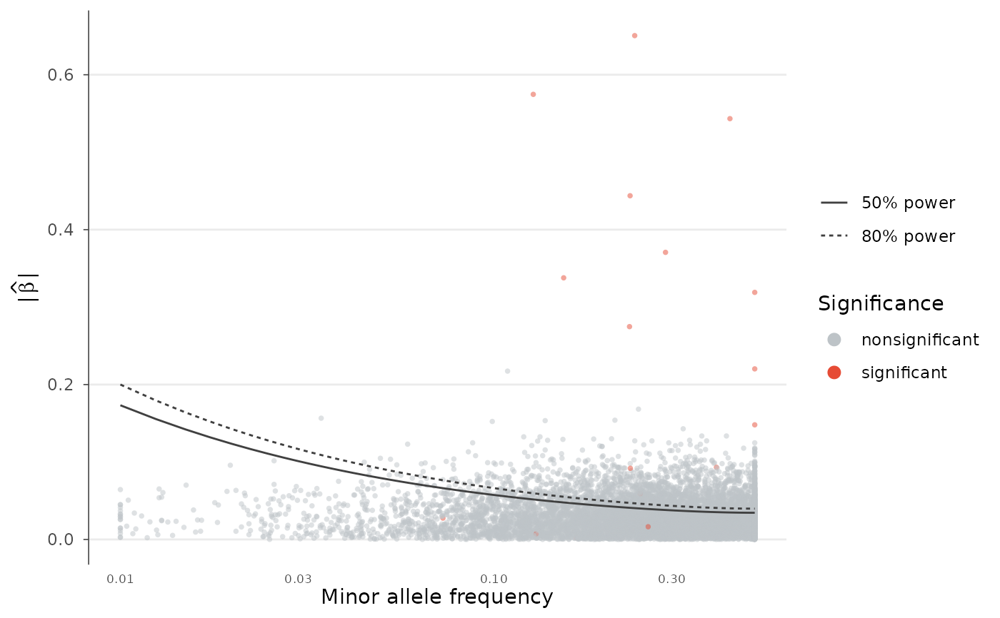
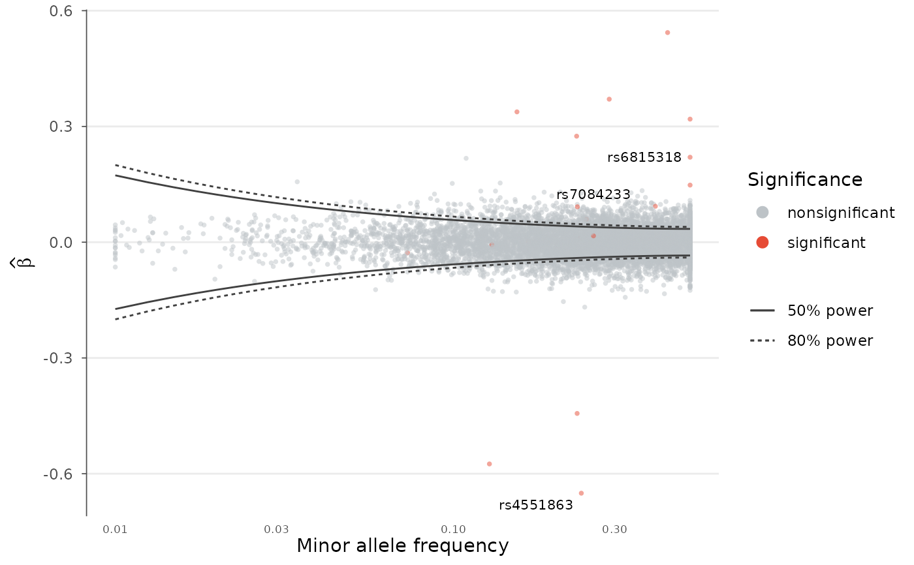

Trumpet plot: effect size versus allele frequency with power contours
Source:R/trumpet-plot.R
trumpet_plot.RdPlot per-variant effect sizes against minor allele frequency and overlay statistical-power ("detection") contours. The contours trace the smallest effect a study of the given sample size can detect at a chosen significance level and power, producing the characteristic trumpet shape that flares toward rare variants. Points falling below all contours lie in the region a study is underpowered to discover.
Arguments
- data
A
gwas_dataobject or data.frame with BETA and AF columns.- beta, af, p
Column name overrides.
- n
Study sample size (single number). If NULL, taken from
n_color anNcolumn (median).- n_col
Name of a per-variant sample-size column.
- sig_level
Significance threshold for the power contours.
- power
Numeric vector of power levels to draw contours for.
- signed
If TRUE, plot signed effects (contours mirrored above and below zero); otherwise plot the absolute effect.
- colors
Named vector with "significant" and "nonsignificant" colors.
- point_size
Point size.
- alpha
Point transparency.
- label_top_n
Label the top N variants by significance.
- title
Plot title.
Details
The power model assumes an additive test on a standardized quantitative trait (per-allele effect on a unit-variance scale). For each minor allele frequency \(f\), the minimum detectable effect is \(\beta_{min}(f) = \sqrt{\lambda / (2 N f (1 - f))}\), where the non-centrality parameter \(\lambda = (z_{\alpha} + z_{power})^2\).
Examples
data(example_gwas)
# Effect size versus MAF with 50% and 80% power contours
trumpet_plot(example_gwas, n = 50000)

# Signed effects and a labelled top hit
trumpet_plot(example_gwas, n = 50000, signed = TRUE,
p = "P", label_top_n = 3)
